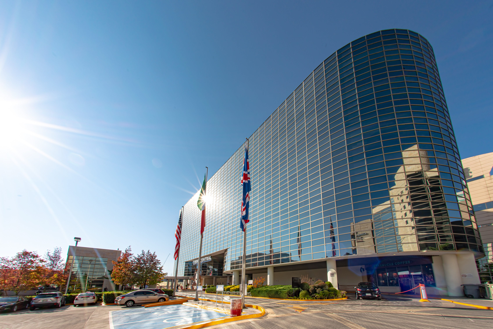
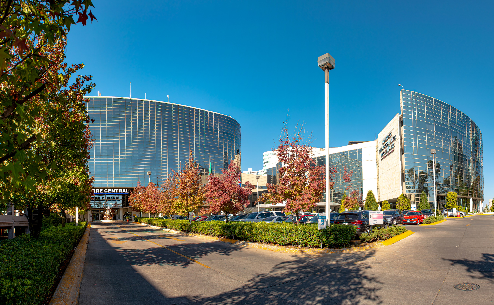
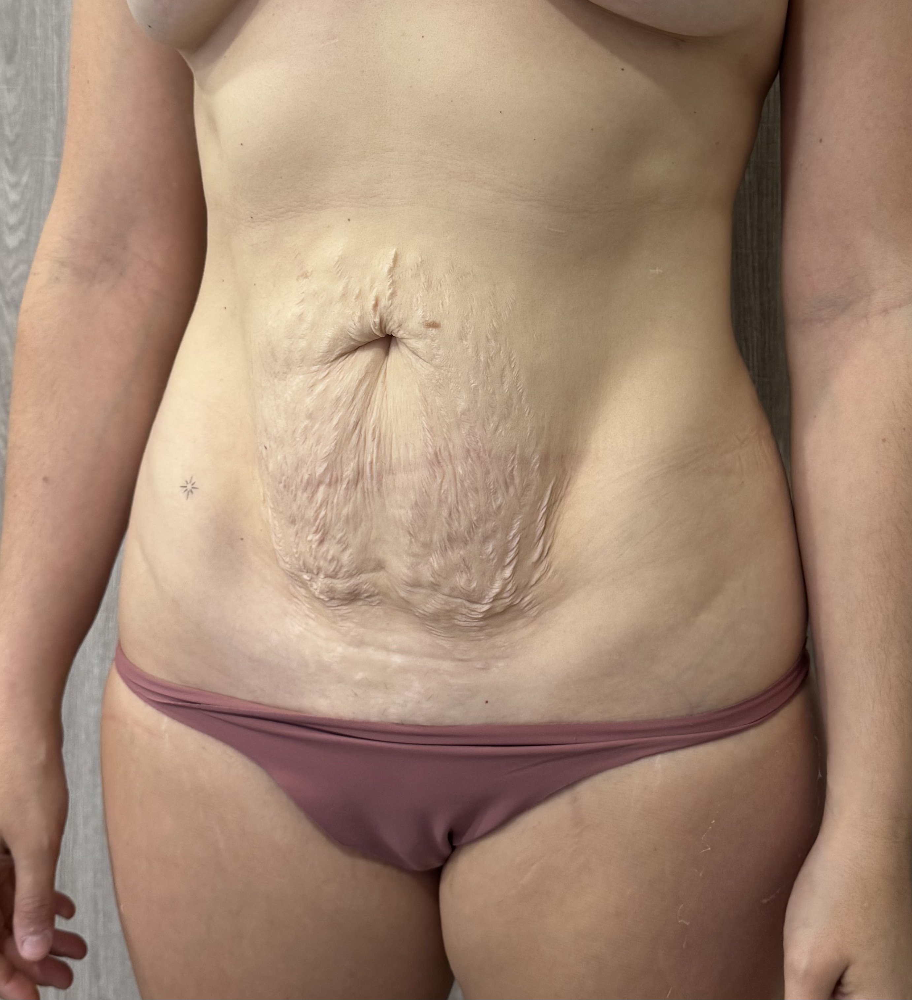
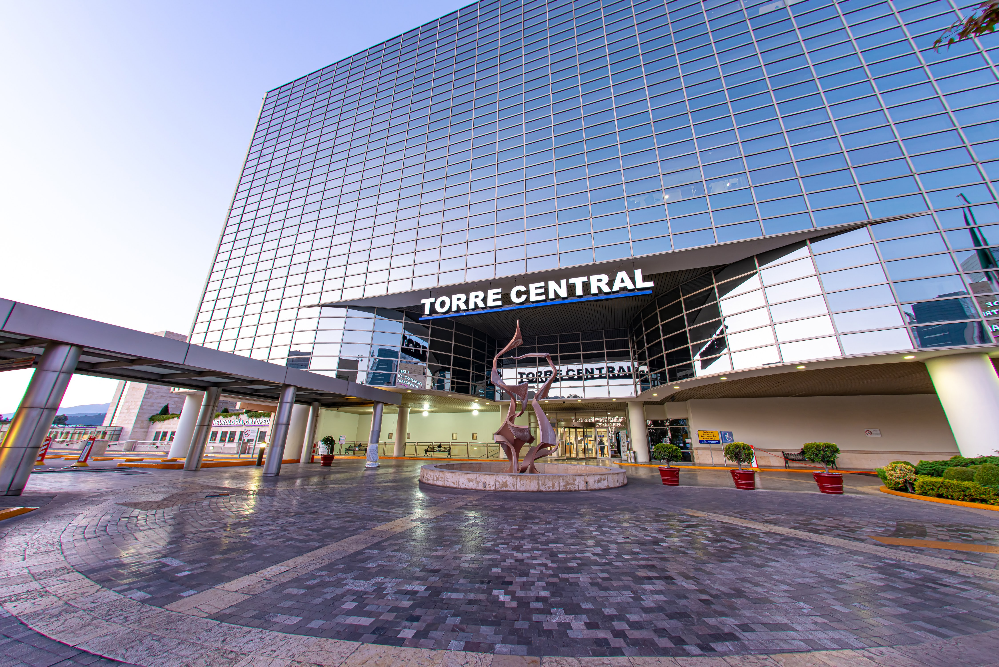
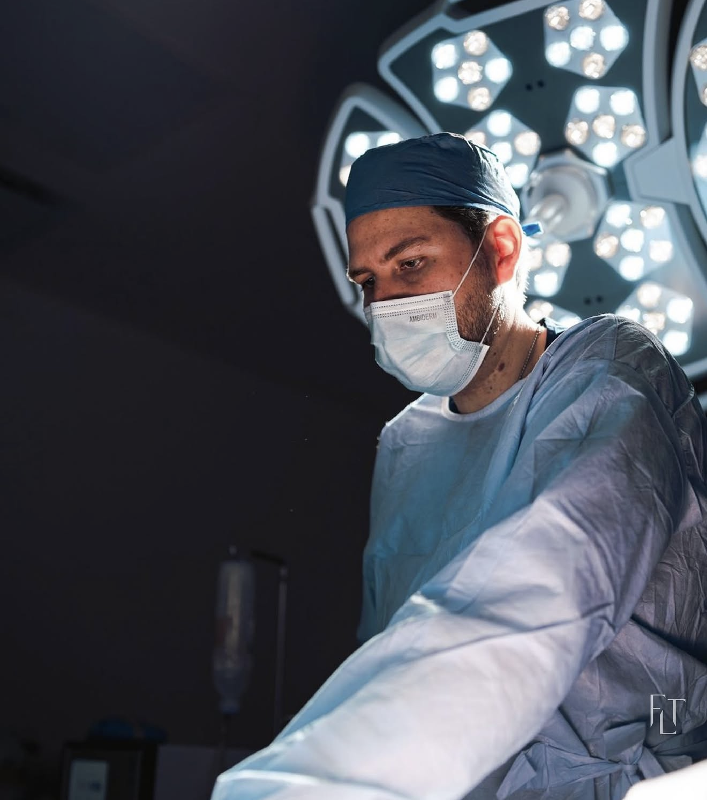

Abdominoplastia en CDMX
Reconstrucción del contorno abdominal mediante remoción de exceso de piel, reparación de la pared muscular y reposicionamiento del ombligo. Resultado firme, plano y armónico.
Conocer más →
Procedimientos reconstructivos y de contorno corporal de alta complejidad, realizados en hospitales certificados con los más estrictos protocolos de seguridad médica.
La clínica de cirugía plástica y reconstructiva del Dr. Francisco López Torres en CDMX está orientada a procedimientos de mayor envergadura: cirugías de contorno corporal, mamarias y reconstructivas que buscan restaurar tanto la forma como la función después del embarazo, pérdida de peso, cambios hormonales o el paso natural del tiempo.
Cada procedimiento se ejecuta dentro de un protocolo quirúrgico riguroso: estudios preoperatorios completos, equipo médico multidisciplinario, anestesiólogo titulado, monitoreo continuo y hospitalización en instalaciones certificadas. La seguridad del paciente nunca se compromete por una técnica más rápida o económica.
Cirugías diseñadas para restaurar el cuerpo después de cambios significativos, con técnicas avanzadas y resultados naturales que respetan tu identidad.
Reconstrucción del contorno abdominal mediante remoción de exceso de piel, reparación de la pared muscular y reposicionamiento del ombligo. Resultado firme, plano y armónico.
Conocer más →
Mamoplastia de aumento con implantes de última generación. Planeación personalizada en cuanto a tamaño, forma, perfil y posición para resultados naturales.
Conocer más →
Levantamiento mamario que devuelve firmeza, proyección y posición al busto, con o sin colocación de implantes según las necesidades anatómicas de cada paciente.
Conocer más →La cirugía plástica reconstructiva involucra procedimientos de mayor extensión y duración, por lo que la infraestructura hospitalaria, el equipo médico y los protocolos de seguridad son determinantes para el resultado final.
En mi clínica trabajamos exclusivamente con hospitales certificados en CDMX, anestesiólogos titulados con experiencia en cirugía plástica, instrumental quirúrgico de alta gama y un protocolo postoperatorio que incluye hospitalización supervisada, control del dolor y seguimiento riguroso durante toda la recuperación.
Antes de cualquier intervención, realizamos estudios preoperatorios completos para confirmar que estás en condiciones óptimas para la cirugía. Si en algún momento detectamos un riesgo, posponemos el procedimiento. No comprometemos la seguridad por agendas o expectativas externas.

Un protocolo claro, ordenado y supervisado de principio a fin, donde cada etapa tiene un propósito específico.
Evaluamos historia médica, expectativas, condición física y anatomía. Definimos juntos si el procedimiento reconstructivo es adecuado.
Análisis de laboratorio completos, valoración cardiológica, mastografía cuando aplica y consulta con el anestesiólogo previo a la cirugía.
Procedimiento en hospital certificado con hospitalización entre 1 y 2 noches según el caso, monitoreo postoperatorio y manejo del dolor.
Revisiones programadas durante semanas y meses, ajuste de cuidados, retiro de drenajes y control del proceso de cicatrización.
Quirófanos con licencia sanitaria vigente, equipamiento de alta especialidad y personal de enfermería capacitado en cirugía plástica.
Anestesiólogos titulados con experiencia específica en cirugía plástica, monitoreo continuo y protocolos de recuperación postanestésica.
Implantes mamarios de marcas reconocidas con garantía internacional, registro sanitario en México y trazabilidad documentada.
Hospitalización supervisada, control del dolor, manejo de drenajes, prendas de compresión y revisiones programadas en consultorio.
Resultados reales de cirugía plástica reconstructiva. Cada caso responde a un plan quirúrgico único diseñado para esa anatomía específica.

ANTES DESPUÉS

Las cirugías reconstructivas requieren infraestructura hospitalaria especializada. Por eso opero exclusivamente en hospitales certificados con licencia sanitaria vigente.


La cirugía plástica reconstructiva tiene como objetivo restaurar la forma y función de estructuras corporales alteradas por embarazo, pérdida de peso, cambios hormonales, secuelas quirúrgicas o el paso del tiempo. Incluye procedimientos como abdominoplastia, aumento de mamas y mastopexia.
Todas las cirugías se realizan en hospitales certificados de Ciudad de México, con quirófanos de alta especialidad, anestesiólogos titulados, monitoreo continuo y los protocolos de seguridad médica más rigurosos.
En muchos casos sí. Procedimientos como el mommy makeover combinan abdominoplastia con cirugía mamaria. La decisión se toma tras un estudio preoperatorio exhaustivo que confirme la seguridad del paciente para someterse a más de un procedimiento simultáneo.
Procedimientos como abdominoplastia y mastopexia requieren entre 3 y 6 semanas para reincorporación a actividades normales y entre 3 y 6 meses para resultado consolidado. Cada paciente recibe un cronograma personalizado de recuperación.
Sí. Procedimientos como abdominoplastia, aumento de mamas y mastopexia requieren entre 1 y 2 noches de hospitalización para monitoreo postoperatorio, control del dolor y manejo seguro del despertar anestésico.

La cirugía plástica reconstructiva es una decisión importante. Conversemos sobre tu caso, evaluemos las opciones y diseñemos juntos un plan quirúrgico seguro y adecuado para ti.
Escribir por WhatsApp